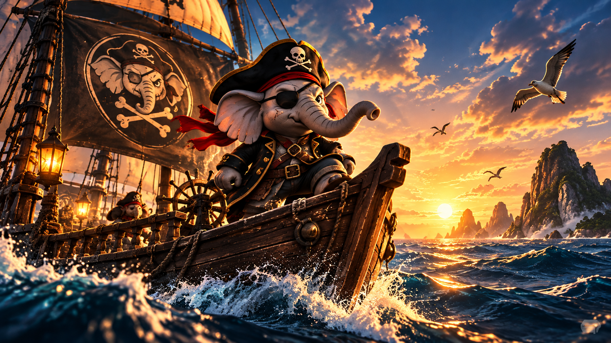

The sea was calling.
At the edge of a quiet island, a young elephant stood alone beneath the fading light of the sun.
His name was KOKI.
Behind him lay the world he had always known. Familiar paths. Familiar faces. A life that was safe, predictable, and far too small for his dreams.
Ahead of him stretched an endless ocean. Beyond its distant horizon waited a world no one had ever described to him.
"There is nothing out there for you," the elders had warned.
"Only storms, monsters, and darkness."
But KOKI had always wondered why the ocean frightened those who had never crossed it.
That night, while the island slept, he climbed aboard a small wooden boat. Its sails were torn. Its compass was broken. And its hull carried the scars of journeys long forgotten.
KOKI placed one hand on the wheel.
For a moment, fear tightened around his heart.
Then he smiled.
"If the world is bigger than my dreams, I want to see it for myself."
The wind rose. The sails trembled. And slowly, the little boat began to move toward the horizon.
KOKI did not know that far beyond the peaceful waters, something ancient had already awakened.
Deep beneath the ocean, a pair of enormous eyes opened in the darkness.
And somewhere in the distance, a forgotten bell began to ring.